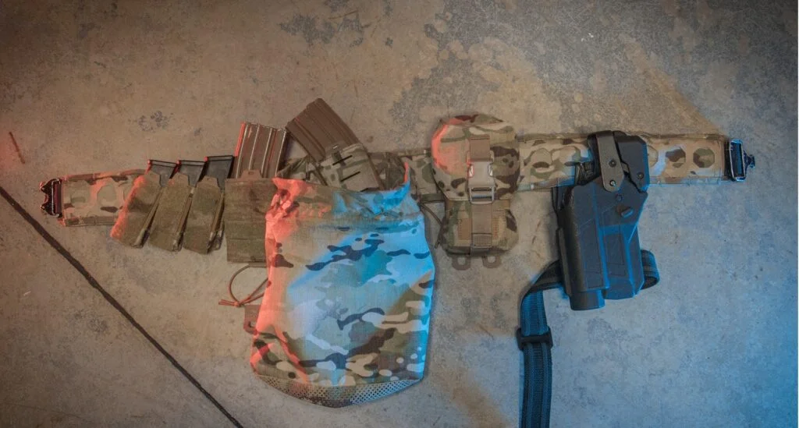
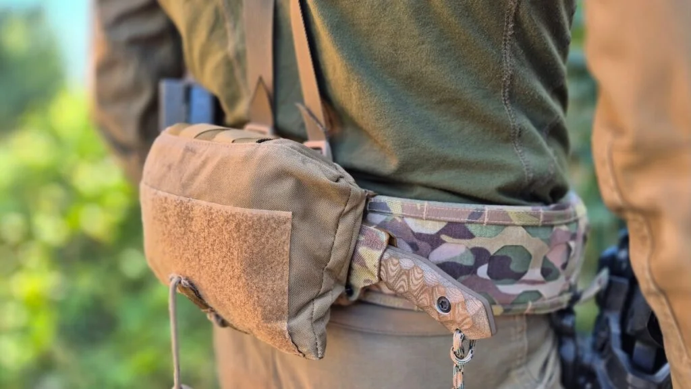

Ładownica pistoletowa z insertem
Montaż prosto lub pod kątem. Wymienny insert.
129 zł z VAT

Baza konfiguracji GFT Synergy. Zestaw pasa zewnętrznego i wewnętrznego pozwala zbudować stabilne oporządzenie pod trening, zawody, pracę lub służbę. System Octamolle umożliwia montaż ładownic pod kątem, bez dodatkowych przejściówek.
Mierz po ubraniu, na którym będziesz nosić pas. Jak dobrać rozmiar →
Dlaczego Alpha?
Warbelt Alpha powstał jako odpowiedź na trzy problemy: ograniczoną konfigurację klasycznych pasów, utratę miejsca przez adaptery oraz dyskomfort przy wielogodzinnym noszeniu oporządzenia.
Montaż ładownic pod kątem bez dodatkowych przejściówek.
Efektywniejsze wykorzystanie powierzchni montażowej MOLLE/PALS.
Range belt → war belt w mniej niż minutę. Wg MILMAG scalanie pasa z nakładką trwa ok. 60 sekund.
Wg MILMAG: strzelec sportowy nosi pas do 4 h, funkcjonariusz 8–12 h, żołnierz w polu jeszcze dłużej.
Możliwość konfiguracji pod sport, służbę i zastosowania specjalistyczne.

Adaptery kątowe kosztują sekcje: trzy adaptery na magazynki pistoletowe potrafią zająć sześć pól MOLLE. W Warbelt Alpha kąt uzyskujesz bezpośrednio w ośmiokątnych gniazdach panelu — trzy ładownice pistoletowe pod kątem plus ładownica karabinowa mieszczą się na pięciu sekcjach.
Osie co 45° pozwalają zoptymalizować dobycie magazynków i dostęp do wyposażenia z tyłu pasa.
Długotrwały nacisk na biodra i miednicę prowadzi do przeciążeń — dlatego rozkład nacisku i profil krawędzi były parametrami projektowymi, a nie poprawką po fakcie.
Przelotki w górnej części pasa pozwalają dołączyć szelki odciążające, gdy loadout robi się ciężki.

Typowe konstrukcje wymagają rozebrania całego pasa: klamra, kabura, każda ładownica osobno. Tutaj ładownice montujesz na elastycznej powierzchni, która po scaleniu z pasem staje się sztywna. Zmiana charakteru pasa to jedna operacja, nie dwadzieścia.
Dolna część rozpina się, więc kompletną nakładkę przeniesiesz na inny pas nośny bez ruszania konfiguracji.

Kabura, ładownice karabinowe i pistoletowe, worek na odzysk, medyk — wszystko w układzie, który sam wybierzesz. Pas zintegrujesz też z uprzężą alpinistyczną: pełne oporządzenie w działaniach wysokościowych, bez zmiany nawyków i układu kieszeni.
Sposób montażu
Elastyczny panel Octamolle układasz na stole. Przeplatasz taśmy ładownic przez gniazda — prosto albo pod kątem, jak w klasycznym MOLLE.
Nakładka łączy się z pasem wewnętrznym w około 60 sekund. Po scaleniu powierzchnia montażowa sztywnieje i stabilizuje sprzęt.
W razie potrzeby dołącz szelki odciążające przez przelotki w górnej krawędzi albo zepnij pas z uprzężą alpinistyczną.
Materiały i parametry
Kompatybilność
„Pas strzelecki wyróżniający się innowacyjnym systemem OCTAMOLLE […] Projekt łączy wytrzymałość z wygodą i licznymi udogodnieniami dla użytkownika profesjonalnego.”— Michał Gaweł, MILMAG Przeczytaj artykuł ↗
FAQ
Tak. Octamolle jest w pełni kompatybilne ze standardem MOLLE/PALS — każdą ładownicę przepleciesz klasycznie w pionie. Ośmiokątne gniazda dodają do tego osie ukośne, więc ten sam osprzęt możesz zamontować pod kątem, bez żadnych adapterów.
Zmierz obwód w miejscu noszenia pasa, po ubraniu, na którym będzie leżał (np. spodnie + pas wewnętrzny). Wybierz rozmiar, w którym Twój wynik mieści się bliżej środka zakresu. Przy wyniku granicznym weź większy rozmiar — a jeśli nie trafisz, pierwsza wymiana rozmiaru jest darmowa.
To ten sam pas w dwóch stanach. Pas wewnętrzny z lekką nakładką i minimalnym osprzętem to range belt na trening. Po scaleniu pełnej nakładki Octamolle z ładownicami — masz war belt. Konwersja w obie strony zajmuje mniej niż minutę, bez zdejmowania kabury i ładownic z nakładki.
Tak — to jedna z funkcji projektowych. Pas montuje się na uprzęży tak, że zachowujesz pełne oporządzenie i dotychczasowy układ kieszeni w działaniach wymagających sprzętu wspinaczkowego. Uprząż i element łączący nie wchodzą w skład zestawu.
Przykład z artykułu MILMAG: trzy adaptery kątowe na magazynki pistoletowe zajmują sześć sekcji MOLLE. Na Octamolle trzy ładownice pistoletowe pod kątem plus ładownica karabinowa zajmują pięć sekcji — jedna ładownica więcej i wciąż wolne pole.
Szyjemy i wysyłamy lokalnie, z Polski. Produkty z magazynu wychodzą w 24 h robocze; serie szyte na zamówienie i konfiguracje custom mają termin podawany indywidualnie przy potwierdzeniu zamówienia.
Uzupełnij konfigurację
Montaż prosto lub pod kątem. Wymienny insert.
Pięć sekcji razem z trzema pistoletowymi — na tym samym odcinku.

Szyte lokalnieSkładany, montowany z tyłu lub z boku pasa.